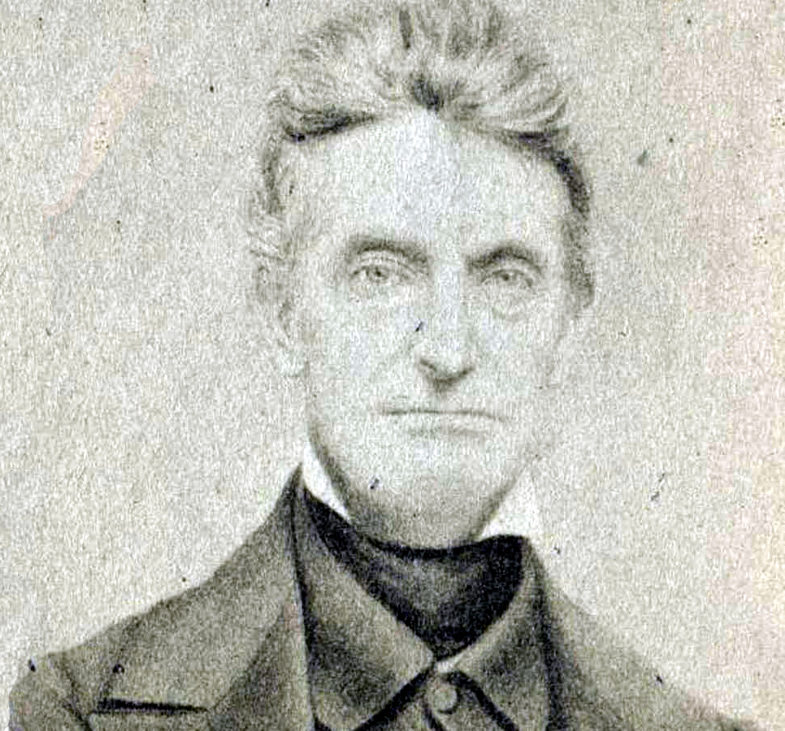

Name ______________________Date ______________Period __________
The Break File
Directions: Work through the five stations in order. Each station holds one record of the years when the argument over slavery became the break of the Union: two debaters at Ottawa, a condemned man at Charles Town, a state explaining its departure, and a vice president explaining his new government. For each record, state what it says will settle the slavery question. You will build the full file in Part 2 and judge the five settlements from it.
Part 1: Five Stations
Station 1: Lincoln's Reply at Ottawa, August 21, 1858
Source: Abraham Lincoln, reply at the Ottawa debate, August 21, 1858. Text quoted verbatim from the audited TPSP record lincoln-ottawa-debate-reply-1858; the edition named in that record is Abraham Lincoln, 'Reply at the Ottawa Debate,' 1858 (Political Debates, 1860 first edition; punctuation normalized). Cuts are marked with ellipses, as the record carries them.
Abraham Lincoln, ambrotype portrait, August 1858. Library of Congress.
[...] I will say here, while upon this subject, that I have no purpose, directly or indirectly, to interfere with the institution of slavery in the States where it exists. I believe I have no lawful right to do so, and I have no inclination to do so. I have no purpose to introduce political and social equality between the white and the black races. There is a physical difference between the two, which, in my judgment, will probably forever forbid their living together upon the footing of perfect equality, and inasmuch as it becomes a necessity that there must be a difference, I, as well as Judge Douglas, am in favor of the race to which I belong having the superior position. I have never said anything to the contrary, but I hold that, notwithstanding all this, there is no reason in the world why the negro is not entitled to all the natural rights enumerated in the Declaration of Independence, the right to life, liberty, and the pursuit of happiness. I hold that he is as much entitled to these as the white man. I agree with Judge Douglas he is not my equal in many respects - certainly not in color, perhaps not in moral or intellectual endowment. But in the right to eat the bread, without the leave of anybody else, which his own hand earns, he is my equal and the equal of Judge Douglas, and the equal of every living man. [...]
File entries. State Lincoln's two denials in his own order: what he has no purpose to do about slavery where it exists, and what he has no purpose to introduce between the races. Then state the position he says he favors on which race holds the superior position.
Against those denials, state the one right he insists the Black man holds as fully as any living man, and the test he gives for it. Then state what settlement of the slavery question his whole position implies: what it would do about slavery's spread, and what it would not do about slavery where it stood.
Station 2: Douglas's Speech at Ottawa, August 21, 1858
Source: Stephen A. Douglas, speech at the Ottawa debate, August 21, 1858. Text quoted verbatim from the audited TPSP record douglas-ottawa-debate-1858; the edition named in that record is Stephen A. Douglas, 'Speech at the Ottawa Debate,' 1858 (Political Debates, 1860 first edition). Cuts are marked with ellipses, as the record carries them.
[...] Mr. Lincoln, following the example and lead of all the little Abolition orators, who go around and lecture in the basements of schools and churches, reads from the Declaration of Independence, that all men were created equal, and then asks, how can you deprive a negro of that equality which God and the Declaration of Independence awards to him? He and they maintain that negro equality is guarantied by the laws of God, and that it is asserted in the Declaration of Independence. If they think so, of course they have a right to say so, and so vote. I do not question Mr. Lincoln's conscientious belief that the negro was made his equal, and hence is his brother; but for my own part, I do not regard the negro as my equal, and positively deny that he is my brother or any kin to me whatever. Lincoln has evidently learned by heart Parson Lovejoy's catechism. He can repeat it as well as Farnsworth, and he is worthy of a medal from Father Giddings and Fred Douglass for his Abolitionism. He holds that the negro was born his equal and yours, and that he was endowed with equality by the Almighty, and that no human law can deprive him of these rights which were guarantied to him by the Supreme ruler of the Universe. Now, I do not believe that the Almighty ever intended the negro to be the equal of the white man. If he did, he has been a long time demonstrating the fact. For thousands of years the negro has been a race upon the earth, and during all that time, in all latitudes and climates, wherever he has wandered or been taken, he has been inferior to the race which he has there met. He belongs to an inferior race, and must always occupy an inferior position. I do not hold that because the negro is our inferior that therefore he ought to be a slave. [...]
File entries. State Douglas's central claim about the Declaration of Independence: whose equality, on his account, did it declare, and what does he say the Almighty never intended? Quote his sentence denying that the Black man is his equal or his brother.
Douglas grants Lincoln the right to believe and vote his belief. State what that concession is doing in a campaign speech, and name the settlement of the slavery question Douglas is defending by it, in which each community decides for itself. Then state the one limit Douglas himself sets on his own claim, in his last sentence.
Station 3: John Brown's Address to the Court, November 2, 1859
Source: John Brown, address to the Virginia court at Charles Town, November 2, 1859, on being asked whether he had anything to say before sentence. Text quoted verbatim from the transcription in The World's Famous Orations, Volume 9 (1906), as carried by Wikisource and fetched and verified during this lesson's build. Cuts are marked with ellipses. The double hyphens are the transcription's own punctuation.

John Brown, daguerreotype portrait attributed to Augustus Washington, about 1846. National Portrait Gallery.
I have, may it please the court, a few words to say. In the first place, I deny everything but what I have all along admitted -- the design on my part to free the slaves. I intended certainly to have made a clean thing of that matter, as I did last winter when I went into Missouri and there took slaves without the snapping of a gun on either side, moved them through the country, and finally left them in Canada. I designed to have done the same thing again on a larger scale. That was all I intended. I never did intend murder, or treason, or the destruction of property, or to excite or incite slaves to rebellion, or to make insurrection.
I have another objection; and that is, it is unjust that I should suffer such a penalty. Had I interfered in the manner which I admit, and which I admit has been fairly proved (for I admire the truthfulness and candor of the greater portion of the witnesses who have testified in this case)--had I so interfered in behalf of the rich, the powerful, the intelligent, the so-called great, or in behalf of any of their friends--either father, mother, brother, sister, wife, or children, or any of that class--and suffered and sacrificed what I have in this interference, it would have been all right; and every man in this court would have deemed it an act worthy of reward rather than punishment.
This court acknowledges, as I suppose, the validity of the law of God. I see a book kissed here which I suppose to be the Bible, or at least the New Testament. That teaches me that all things whatsoever I would that men should do to me, I should do even so to them. It teaches me, further, to "remember them that are in bonds, as bound with them." I endeavored to act up to that instruction. I say I am yet too young to understand that God is any respecter of persons. I believe that to have interfered as I have done--as I have always freely admitted I have done--in behalf of His despised poor was not wrong, but right. Now, if it is deemed necessary that I should forfeit my life for the furtherance of the ends of justice, and mingle my blood further with the blood of my children and with the blood of millions in this slave country whose rights are disregarded by wicked, cruel, and unjust enactments--I submit; so let it be done!
[...] Now I have done.
File entries. State what Brown admits and what he denies, in his own order. Then state his objection to the penalty: for whom, had he acted, would the same act have been judged worthy of reward?
Brown rests his defense on a law above the court's. State the two teachings he takes from the book kissed in the courtroom, and quote his closing submission in full. Then state what settlement of the slavery question his address claims: by what authority, and at what price, will it be settled?
Station 4: South Carolina's Declaration of the Immediate Causes of Secession, December 24, 1860
Source: South Carolina Secession Convention, Declaration of the Immediate Causes of Secession, adopted December 24, 1860, four days after the state's secession. Text quoted verbatim from the audited TPSP record south-carolina-secession-declaration-1860; the edition named in that record is South Carolina Secession Convention, 'Declaration of the Immediate Causes of Secession,' 1860 (Avalon Project, Yale Law School). Cuts are marked with ellipses, as the record carries them.
In the present case, that fact is established with certainty. We assert that fourteen of the States have deliberately refused, for years past, to fulfill their constitutional obligations, and we refer to their own Statutes for the proof.
The Constitution of the United States, in its fourth Article, provides as follows: "No person held to service or labor in one State, under the laws thereof, escaping into another, shall, in consequence of any law or regulation therein, be discharged from such service or labor, but shall be delivered up, on claim of the party to whom such service or labor may be due."
[...] This stipulation was so material to the compact, that without it that compact would not have been made. The greater number of the contracting parties held slaves, and they had previously evinced their estimate of the value of such a stipulation by making it a condition in the Ordinance for the government of the territory ceded by Virginia, which now composes the States north of the Ohio River. [...] An increasing hostility on the part of the non-slaveholding States to the institution of slavery, has led to a disregard of their obligations, and the laws of the General Government have ceased to effect the objects of the Constitution. The States of Maine, New Hampshire, Vermont, Massachusetts, Connecticut, Rhode Island, New York, Pennsylvania, Illinois, Indiana, Michigan, Wisconsin and Iowa, have enacted laws which either nullify the Acts of Congress or render useless any attempt to execute them. In many of these States the fugitive is discharged from service or labor claimed, and in none of them has the State Government complied with the stipulation made in the Constitution. The State of New Jersey, at an early day, passed a law in conformity with her constitutional obligation; but the current of anti-slavery feeling has led her more recently to enact laws which render inoperative the remedies provided by her own law and by the laws of Congress. In the State of New York even the right of transit for a slave has been denied by her tribunals; and the States of Ohio and Iowa have refused to surrender to justice fugitives charged with murder, and with inciting servile insurrection in the State of Virginia. Thus the constituted compact has been deliberately broken and disregarded by the non-slaveholding States, and the consequence follows that South Carolina is released from her obligation. [...] We affirm that these ends for which this Government was instituted have been defeated, and the Government itself has been made destructive of them by the action of the non-slaveholding States. Those States have assume the right of deciding upon the propriety of our domestic institutions; and have denied the rights of property established in fifteen of the States and recognized by the Constitution; they have denounced as sinful the institution of slavery; they have permitted open establishment among them of societies, whose avowed object is to disturb the peace and to eloign the property of the citizens of other States. They have encouraged and assisted thousands of our slaves to leave their homes; and those who remain, have been incited by emissaries, books and pictures to servile insurrection. [...] Observing the forms of the Constitution, a sectional party has found within that Article establishing the Executive Department, the means of subverting the Constitution itself. A geographical line has been drawn across the Union, and all the States north of that line have united in the election of a man to the high office of President of the United States, whose opinions and purposes are hostile to slavery. [...] On the 4th day of March next, this party will take possession of the Government. It has announced that the South shall be excluded from the common territory, that the judicial tribunals shall be made sectional, and that a war must be waged against slavery until it shall cease throughout the United States.
File entries. The declaration's case rests on one constitutional stipulation. State which clause it quotes, what the clause required of the free states, and what the declaration says fourteen states did instead. Name two acts it charges against the northern states beyond the fugitive laws.
State the event the declaration treats as the final proof that the government's purposes had failed, and the settlement it draws from that event. In the declaration's own logic, who broke the compact first, and what does that breaking release South Carolina to do?
Station 5: The Cornerstone Speech, March 21, 1861
Source: Alexander H. Stephens, vice president of the Confederate States, speech at Savannah, Georgia, March 21, 1861. Text quoted verbatim from the audited TPSP record stephens-cornerstone-speech-1861; the edition named in that record is Alexander H. Stephens, 'Cornerstone Speech,' 1861 (American Rhetoric; after Henry Cleveland, Alexander H. Stephens in Public and Private, 1886). Cuts are marked with ellipses.
But not to be tedious in enumerating the numerous changes for the better, allow me to allude to one other though last, not least. The new constitution has put at rest, forever, all the agitating questions relating to our peculiar institution African slavery as it exists amongst us the proper status of the negro in our form of civilization. This was the immediate cause of the late rupture and present revolution. Jefferson in his forecast, had anticipated this, as the "rock upon which the old Union would split." He was right. What was conjecture with him, is now a realized fact. But whether he fully comprehended the great truth upon which that rock stood and stands, may be doubted. The prevailing ideas entertained by him and most of the leading statesmen at the time of the formation of the old constitution, were that the enslavement of the African was in violation of the laws of nature; that it was wrong in principle, socially, morally, and politically. It was an evil they knew not well how to deal with, but the general opinion of the men of that day was that, somehow or other in the order of Providence, the institution would be evanescent and pass away. This idea, though not incorporated in the constitution, was the prevailing idea at that time. The constitution, it is true, secured every essential guarantee to the institution while it should last, and hence no argument can be justly urged against the constitutional guarantees thus secured, because of the common sentiment of the day. Those ideas, however, were fundamentally wrong. They rested upon the assumption of the equality of races. This was an error. It was a sandy foundation, and the government built upon it fell when the "storm came and the wind blew." Our new government is founded upon exactly the opposite idea; its foundations are laid, its corner-stone rests, upon the great truth that the negro is not equal to the white man; that slavery -- subordination to the superior race -- is his natural and normal condition. This, our new government, is the first, in the history of the world, based upon this great physical, philosophical, and moral truth. [...] Our confederacy is founded upon principles in strict conformity with these laws. This stone which was rejected by the first builders "is become the chief of the corner" the real "corner-stone" in our new edifice.
File entries. State what Stephens says the new constitution has put at rest forever, and what he names as the immediate cause of the rupture. Then state the prevailing idea of Jefferson's generation about slavery that he says was fundamentally wrong, and the assumption he says it rested on.
Quote the cornerstone sentence in full. Then state the settlement Stephens claims the Confederacy embodies: what question does he say is now closed, on what foundation, and why does he call the new government the first of its kind in the history of the world?
Part 2: The File and the Verdict
Complete the file from your station work. Then answer the verdict question in a paragraph, defending your judgment from the texts.
Record
What it says will settle the slavery question
The ground it claims, and what it fears
1. Lincoln at Ottawa, 1858
2. Douglas at Ottawa, 1858
3. Brown to the court, 1859
4. South Carolina's declaration, 1860
5. Stephens at Savannah, 1861
The verdict. Which of the five records did the events of 1861 prove right about how the slavery question would be settled: Lincoln's containment, Douglas's local choice, Brown's sword and gallows, South Carolina's departure, or Stephens's foundation? Defend your verdict from at least three of the five records, and answer the strongest record for another settlement.
Teacher Answer Key
Station 1: Lincoln's Reply at Ottawa, August 21, 1858
State the two denials and the favored position. Lincoln denies, first, any purpose, directly or indirectly, to interfere with slavery in the states where it exists, holding he has no lawful right and no inclination to do so; second, any purpose to introduce political and social equality between the white and black races. He states plainly that, a difference being necessary, he favors the race to which he belongs having the superior position, and that he has never said anything to the contrary. Credit requires both denials and the superior position statement, none of them softened.
State the one right, its test, and the settlement implied. The right is the whole list of natural rights enumerated in the Declaration of Independence, life, liberty, and the pursuit of happiness, held by the Black man as much as by the white man. The test is bread: in the right to eat the bread, without the leave of anybody else, which his own hand earns, the Black man is Lincoln's equal, Douglas's equal, and the equal of every living man, whatever Lincoln concedes on color and endowment. The settlement implied is containment without interference: slavery undisturbed where it stands, its spread stopped by a standard that calls it a wrong.
Station 2: Douglas's Speech at Ottawa, August 21, 1858
State the central claim, and quote the denial. Douglas claims that the Declaration's equality was the equality of white men: the Almighty never intended the Black man to be the equal of the white man, who has occupied the superior place in all latitudes and climates for thousands of years. His sentence, quoted whole: "I do not regard the negro as my equal, and positively deny that he is my brother or any kin to me whatever." He adds that Lincoln has learned Parson Lovejoy's catechism by heart and deserves a medal from Giddings and Douglass for his abolitionism, the campaign's framing of Lincoln as a radical.
What is the concession doing, what settlement does it defend, and what limit does he set? The concession, that believers in Black equality have a right to say so and vote so, presents Douglas as the tolerant democrat while he defines that belief as an error about nature; tolerance of the opinion costs him nothing with an audience he is telling that nature itself ranks the races. The settlement defended is popular sovereignty, each territory and community deciding the question for itself under a government he elsewhere called a white man's government. His own limit closes the record: "I do not hold that because the negro is our inferior that therefore he ought to be a slave," a sentence students should be made to weigh, since it concedes that inferiority alone does not settle the very question the speech is about.
Station 3: John Brown's Address to the Court, November 2, 1859
State the admissions, the denials, and the objection. Brown admits one design only, to free enslaved people, as he had done in Missouri the winter before, moving people through the country to Canada without the snapping of a gun. He denies intending murder, treason, the destruction of property, exciting slaves to rebellion, or making insurrection. His objection is that the penalty is unjust: had he interfered in behalf of the rich, the powerful, the intelligent, the so called great, or any of their friends and family, and suffered and sacrificed what he had, every man in the court would have deemed the act worthy of reward rather than punishment.
State the two teachings, quote the submission, and name the settlement claimed. The teachings are the Golden Rule, that all things whatsoever he would that men should do to him, he should do even so to them, and the command to remember them that are in bonds, as bound with them. The submission, quoted whole: "Now, if it is deemed necessary that I should forfeit my life for the furtherance of the ends of justice, and mingle my blood further with the blood of my children and with the blood of millions in this slave country whose rights are disregarded by wicked, cruel, and unjust enactments--I submit; so let it be done!" The settlement claimed is God's law executed through his own death: the question will be settled not by Congress or courts but by the moral law he obeyed, with his blood as its instrument, read in the North as martyrdom and in the South as a warrant for invasion.
Station 4: South Carolina's Declaration, December 24, 1860
State the stipulation, the charge, and two further acts. The stipulation is the fourth article's fugitive clause, quoted in the record: no person held to service or labor in one state, escaping into another, shall be discharged from that service, but shall be delivered up on claim. The declaration asserts that fourteen states deliberately refused for years to fulfill that obligation, enacting laws that nullify the acts of Congress or render them useless. Beyond the fugitive laws it charges that New York denied even the right of transit for an enslaved person, that Ohio and Iowa refused to surrender fugitives charged with murder and with inciting servile insurrection in Virginia, that northern states denounced slavery as sinful, permitted abolition societies openly, and encouraged and assisted thousands of enslaved people to leave their homes.
State the final proof and the settlement drawn. The final proof is the election of 1860: a sectional party, observing the forms of the Constitution, united every state north of a geographical line behind a president whose opinions and purposes are hostile to slavery, and on March 4 that party will take possession of the government announcing the South's exclusion from the common territory and a war against slavery. In the declaration's logic the northern states broke the compact first, deliberately and over years, so the consequence follows that South Carolina is released from her obligation. The settlement is departure: the question is settled by dissolving the Union that contained it, which is why the document lists breaches rather than proposing terms.
Station 5: The Cornerstone Speech, March 21, 1861
State what is put at rest, the immediate cause, and the founders' error. The new constitution, Stephens says, has put at rest forever all the agitating questions relating to African slavery and the proper status of the Black man in their civilization. Slavery was the immediate cause of the late rupture and present revolution, the rock Jefferson foresaw the old Union would split on. The founders' prevailing idea, that enslaving Africans violated the laws of nature, was wrong in principle, socially, morally, and politically, and their expectation that it would pass away rested on the assumption of the equality of races.
Quote the cornerstone sentence, and state the settlement claimed. Quoted whole: "Our new government is founded upon exactly the opposite idea; its foundations are laid, its corner-stone rests, upon the great truth that the negro is not equal to the white man; that slavery -- subordination to the superior race -- is his natural and normal condition." The settlement claimed is foundation: the question is closed by building a state on the opposite premise from 1776, the first government in the history of the world, he claims, based on this physical, philosophical, and moral truth. Students should note what the claim concedes: that the question could not be settled inside the old Union on those terms.
Part 2: The File (filled) and the Verdict (Grading Guide)
Record
What it says will settle the slavery question
The ground it claims, and what it fears
1. Lincoln at Ottawa, 1858
Containment: slavery left untouched where state law protected it, barred from spreading, and held to the natural rights standard of the Declaration until it ended.
The Declaration's natural rights, including the right to eat the bread one's own hand earns; he fears being read as preaching the social and political equality he disavows.
2. Douglas at Ottawa, 1858
Local choice under a white man's reading of the founding: each community decides, because the Declaration, he claims, declared white equality only.
The claim that Black people belong to an inferior race and must always occupy an inferior position; he fears Lincoln's abolition catechism winning Illinois.
3. Brown to the court, 1859
God's law over the court's: interference on behalf of the despised poor was right, and if justice requires his life, he submits to pay it.
The Golden Rule and the command to remember them that are in bonds; he fears nothing for himself and charges the court with rewarding the same act done for the rich.
4. South Carolina's declaration, 1860
Departure: the compact broken by the North over fugitive returns, the state is released from its obligation and withdraws.
The Constitution as a compact among sovereign states and its fugitive clause; it fears a government turned sectional and a war waged against slavery.
5. Stephens at Savannah, 1861
Foundation: a new government resting on racial inequality as a physical, philosophical, and moral truth, with slavery as the Black man's natural and normal condition.
The claim that the founders' assumption of racial equality was the error that split the Union; he fears nothing, claiming the question is put at rest forever.
Verdict grading guide. Full credit is open to more than one verdict when defended from the records. Brown proved right rests on the sequence the records cannot escape: every paper settlement in the file failed, and within weeks of Stephens's speech the question moved to armies, settled in the end by the blood Brown submitted to shed, a reading that must answer Lincoln's containment. South Carolina and Stephens proved right rests on their shared diagnosis, that the question could not be settled inside the Union once a sectional party won on containment; events proved the diagnosis and destroyed the foundation, and a verdict for them must separate the two. Lincoln proved right rests on the war's actual settlement, slavery ended without the slave code, without local choice saving it in the territories, and under a government that fought, at first, on his stated ground of Union and containment. A verdict for Douglas must confront 1861 itself: popular sovereignty is the one settlement none of the year's events used. A verdict that ignores the strongest opposing record, Brown's submission for a claim that words settled it, or Stephens's forever for a claim that departure settled it, has done half the task.